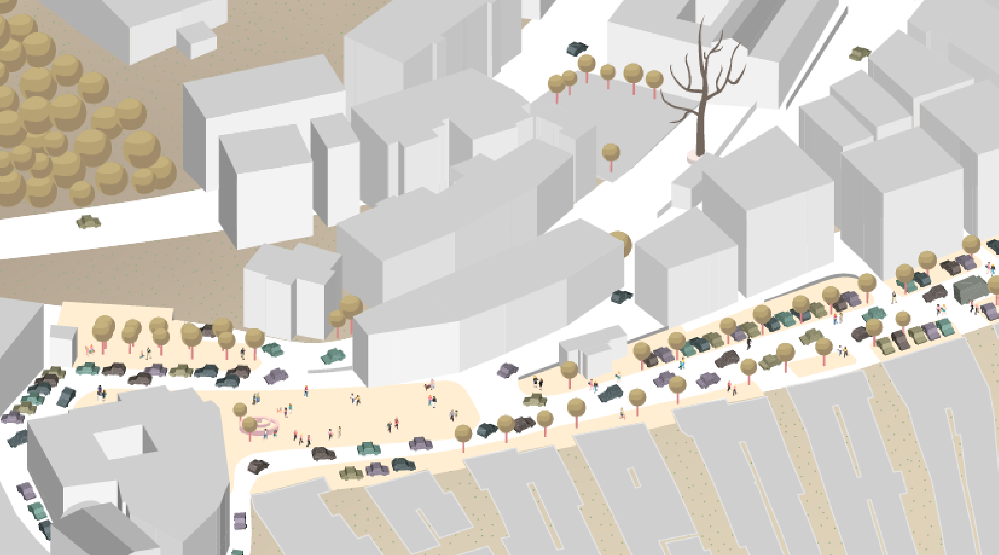
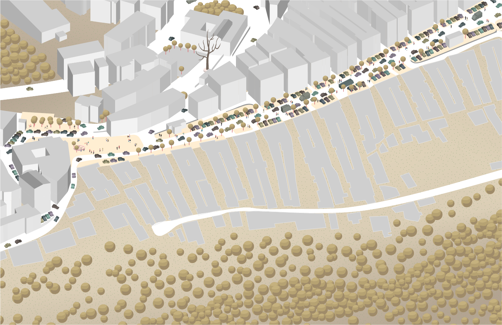
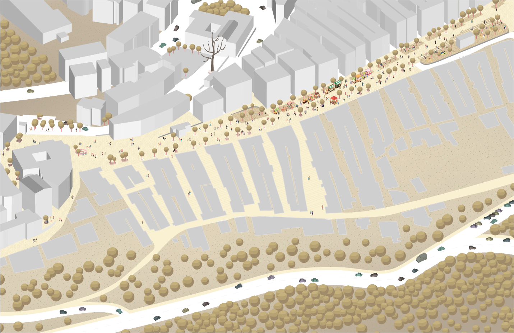

Project type
Academic
Individual
Tools
Autocad
qGis
SketchUp
Adobe Illustrator
Duration
1 year

A 4K-inhabitants town, built in XIII century on the Gargano
promontory, is currently facing a critical situation.
Too many cars along a few roads and no alternatives to drive
around.
The realization of a new suburban road, quite far
from the downtown, would return public space and pathways to
pedestrians.
Why can't heaven be a place on Earth?
Ischitella is
nestled on a quiet and woody hill but it returns a destorted
self-image of noise, traffic and air pollution.
Walking around is messy and complicated, and this made inhabitants
get used to take the wheel even when unnecessary.
The town has a unique focal point composed of a main square (in
orange) and an uphill boulevard (in yellow).
The
boulevard hosts most of the shops and the trading activities, thus
often resulting in traffic jams.
The overuse of
vehicles also threatens the integrity of the historical character
of the town.
A roller coaster
Despite the double choice a car driver has to move from A to B,
there is currently only one way back to A from B. Intervention is
necessary to balance the vehicles circulation.
A new road (in orange) to connect the B-point with a new C-point.
Roundabouts on the A-B-C points enable a continuous and
non-invasive driving throughout the town.
In this way,
the square and the uphill boulevard become a single place (in
yellow) reserved exclusively for man.
Where to hide cars?
In new parking areas placed at the entrances of the town (in red).
People will leave their own cars and reach the downtown by
walking.
A car-free boulevard will both improve the
shopping time and help counteracting pollution.
The sidewalks are used as parking lots and pedestrians spill out
onto the carriageway. Walking is as unpleasant as driving.

Cars travelling outside return wellbeing and a more human
dimension to the inside.

The external appearance of the town may undergo changes,
potentially leading to concerns about its compatibility with the
surrounding natural environment.
The primary objective pursued is to restore the town to its
original seventeenth-century form and function: the square and the
uphill boulevard will merge into one large square primarily
designed for pedestrians.
As for automobiles, their circulation will be redirected to the
outskirts, allowing for the reactivation of some historic streets
connecting new parking areas to the main square, thereby
revitalizing them.
Green elements will be integrated into the area between the new
road and the town, serving to enhance nature's presence and
mitigate noise from the road.
It's important to note that this project is set in 2071, and the
thesis work also encompasses research on automobile usage,
particularly focusing on electric cars, autonomous vehicles, and
car-sharing. These innovations are expected to reduce noise and
alleviate parking demands.